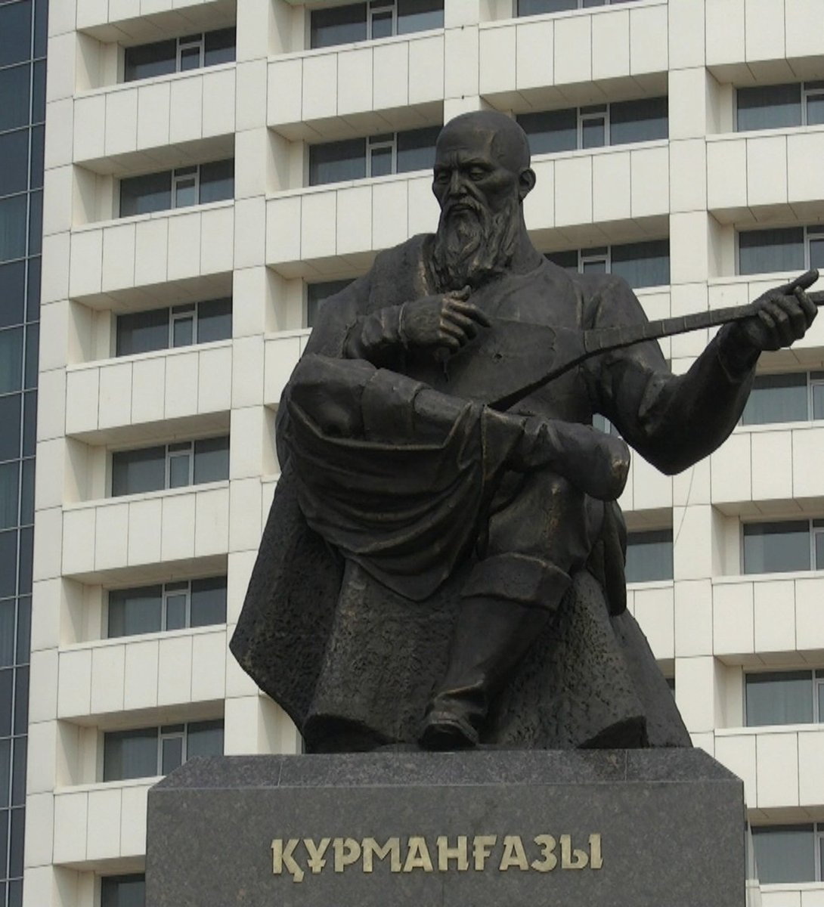

Фотосурет уақытша жүктелмеді')">Құрманғазы Сағырбайұлы (1818–1889) — қазақтың әйгілі күйші-композиторы, домбыра өнерінің көрнекті өкілі. Оның күйлері азаттық рухы мен халық өмірін бейнелейді.
Қосымша ақпарат: www.astana-akshamy.kz
Сурет: https://sputnik.kz/20190122/qurmangazy-sagyrbaiuly-omirbaian-8945443.html